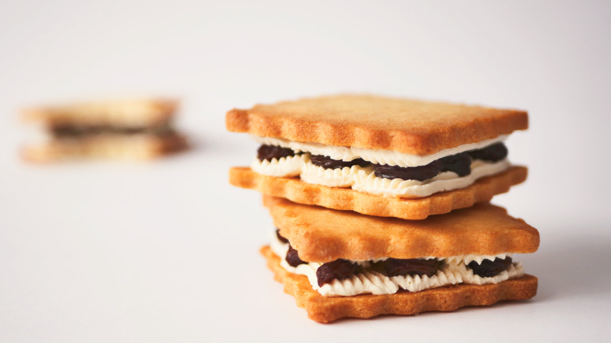

Rum Raisin Butter Sandwich Cookies

Intro
Rum grape sandwich biscuits . Friends who often travel to Japan must be very familiar with this dessert. This biscuit is so famous that major supermarkets are rushing to launch their own versions, among which Hokkaido-Rokkatei 's rum grape biscuits are the most famous. is the most popular first choice.
The charm of this biscuit is that the rum-soaked raisins are combined with the sweet cream frosting, and paired with the milky and fluffy biscuit , the taste is really delightful when you bite into it.
This time, the rum and grape sandwich biscuits are different from the general Japanese method . We use Italian buttercream for the filling , which has a light and fragrant taste. The biscuits are more like the French sweet tart crust, which is just an adjustment. More fluffy and melt-in-your-mouth. Friends who like baking can make more desserts as long as they learn these two techniques. The point is that they are not difficult at all, and the finished products are very enjoyable.
Also, the aroma of rum-soaked grapes is really charming. In addition to being used on biscuits, it also goes well with bread and ice cream! Hope you all will like this recipe.
Ingredients list for Rum Grape Sandwich Biscuits
Cookies
- 1 egg
- 100g unsalted butter
- 90g Almond flour
- 55g powdered sugar
- 110g Low gluten flour
Italian buttercream
- 120g unsalted butter
- 55g fine sugar
- 18g water
- 30g Egg white
Ram grapes
- 40g Jamaican rum
- 70g Raisins
Steps to make Rum Grape Sandwich Biscuits
- First make the rum grapes : prepare a bowl, pour hot water into it, then add raisins to rinse off excess oil and impurities.
- Then pick up the raisins, spread them on a paper towel, and use another paper towel to gently press them to absorb the water.
- Prepare a sealable jar, add the raisins, and then pour 40g of rum for pickling. After sealing, shake the bottle so that each grape can soak in the wine. Let the wine soak for at least one night (pickle for two or three days. better flavor)
- Next, make the biscuits : Add the softened cream cut into small pieces into a mixing bowl, and stir with a silicone spatula until it becomes smooth and mayonnaise-like. No need to whip.
- Sift in the powdered sugar and mix well with the cream
- Add a whole egg and use a whisk to stir the eggs and cream until they are fully emulsified. This action will take a while, so be patient.
- Then sift in the almond flour and mix until it is even and no dry powder is visible.
- Sift in the low-gluten flour and use the cutting and mixing method to mix. Do not over-mix to avoid gluten.
- Take out the dough and put it on the plastic wrap. After shaping it slightly, put it in the refrigerator for half an hour.
- Take out the chilled dough, roll it out to a thickness of 0.4cm, then put the dough in the freezer for 20 minutes
- Take out the frozen dough. We use a 2-inch square mold, which can make about 20-22 biscuits. If there is no mold, you can cut it into a 4x8cm rectangle. Place the cut cookie dough on the baking mat.
- Preheat the oven to 160°C and bake for 15-18 minutes
- Remove the baked cookies to a cookie rack and let cool
- Next, make the Italian buttercream : Add 30 grams of egg whites, a pinch of salt and a few drops of lemon juice into a mixing bowl, and use a hand mixer to beat at medium speed until soft peaks form.
- Take another small pot, add 55 grams of sugar and 18 grams of water, and cook over medium-low heat until it boils. The syrup should be cooked to a soft ball stage of 117 degrees C, then turn off the heat.
- Pour the syrup at a trickling speed while whipping the meringue at high speed. After pouring the syrup, immediately change to low speed and beat until the meringue cools down (be sure to wait until the meringue cools down to room temperature before proceeding to the following steps)
- Add 120 grams of softened cream in three batches and beat evenly at medium speed. After the cream is evenly mixed, beat at high speed for 2 minutes. The texture will become lighter and softer. Fill the whipped cream into a piping bag and set aside.
- Combination biscuits : Pipe a layer of buttercream on one side of two biscuits, then place the wine-stained rum raisins on one of them, and then stack the other biscuit after placing it.
- The prepared Rum Grape Sandwich Biscuits will be most delicious after being refrigerated for an hour.